ご本人の方へ
住み慣れた家で、暮らし続けたい。そのお手伝いです。月に一度、顔なじみが伺って、小さな用事を済ませます。
「いらない」と思われたら、そうおっしゃってください。ご本人の気持ちが、いちばん大切です。
住んでいる家も、住まなくなった家も
「家守（いえもり）」は、月に一度、家の様子を見に伺い、写真つきでお知らせする見守りのお仕事です。住み慣れた家で暮らし続けたいご本人にも、遠くのご家族にも。
「気になるけれど、行けない」を、預かります。
お電話でも、Webでも、ご相談いただけます。LINEでも、お気軽にどうぞ。お電話に出られないときは、折り返します。
対象：逗子市・鎌倉市・葉山町の家。月額の料金は準備中です。決まりしだいお知らせします。このお仕事は、まだ始めていません。
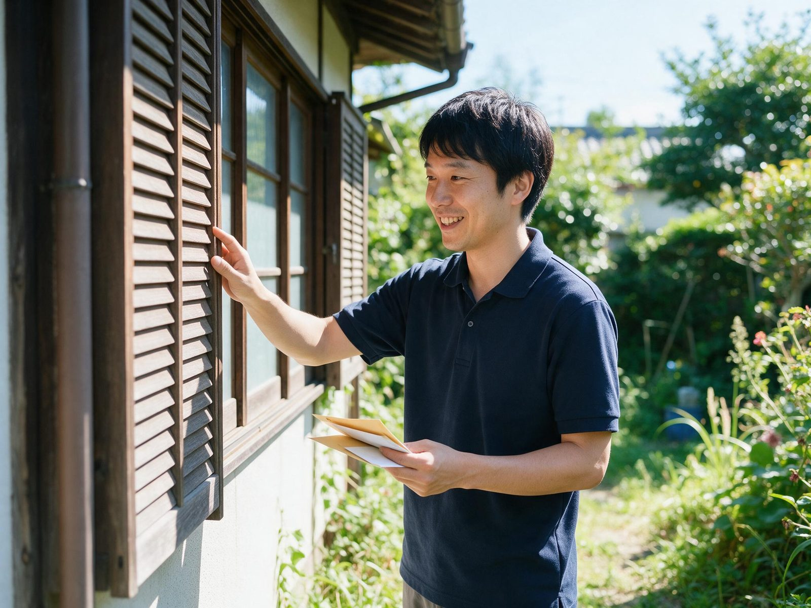
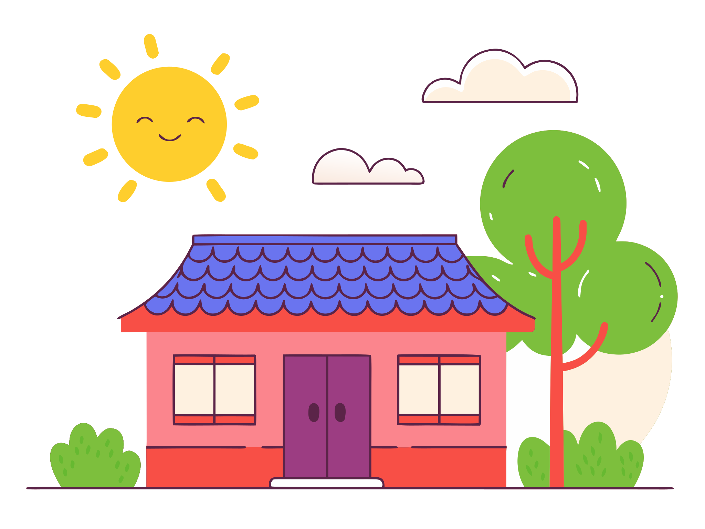
家のこと、気がかりではありませんか!?
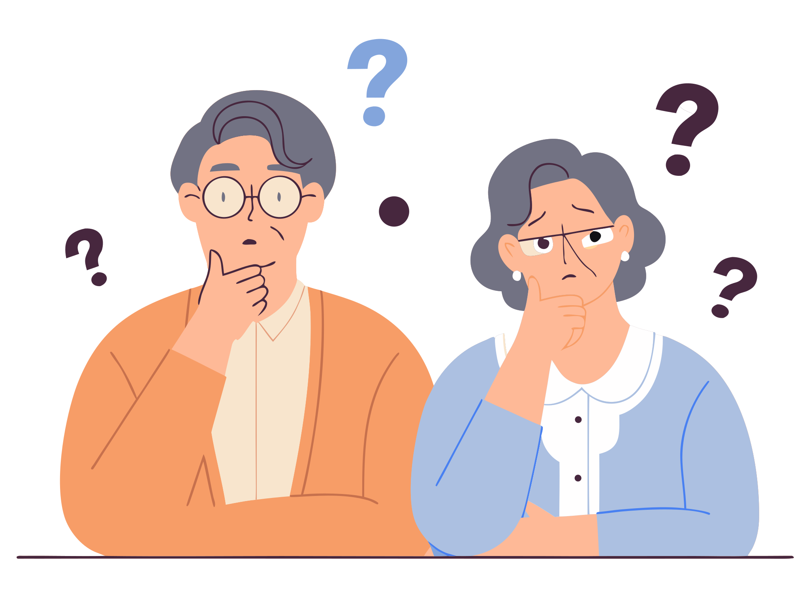
その気がかり、Local Edit の「家守」が見守ります。
離れていても、ひとりで暮らしていても。月に一度、同じ人が様子を見て、写真つきでお知らせします。
どんなことを、してくれるの!?
訪問のたびに、様子を写真つきでお知らせします。気づいたことは、お伝えします。
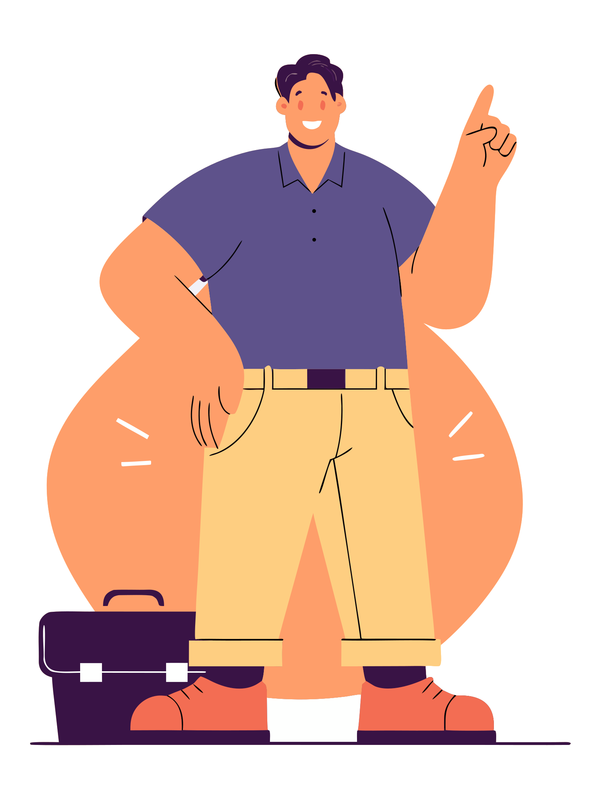
まずは、いまの家の様子を聞かせてください。
お電話でも、Webでも、ご相談いただけます。LINEでも、お気軽にどうぞ。お電話に出られないときは、折り返します。
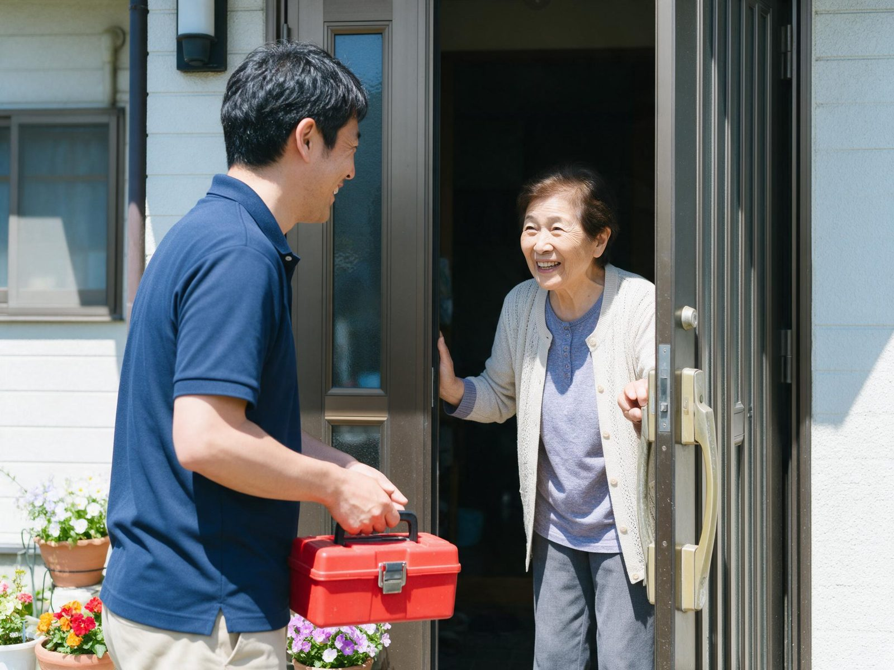
伺う人の名前は、訪問の前にお知らせします。顔なじみになれる見守りにします。
見るだけで帰る日があります。「直さなくて大丈夫」とお伝えするのも、仕事です。
作業を始める前に金額をお伝えし、ご納得いただいてから進めます。
ひとつ、お願い
「近くで工事をしていて、お宅の屋根が浮いているのが見えた」。そう言って来た人を、屋根に上げないでください。本当に直す必要があるかを、代わりに見に伺います。
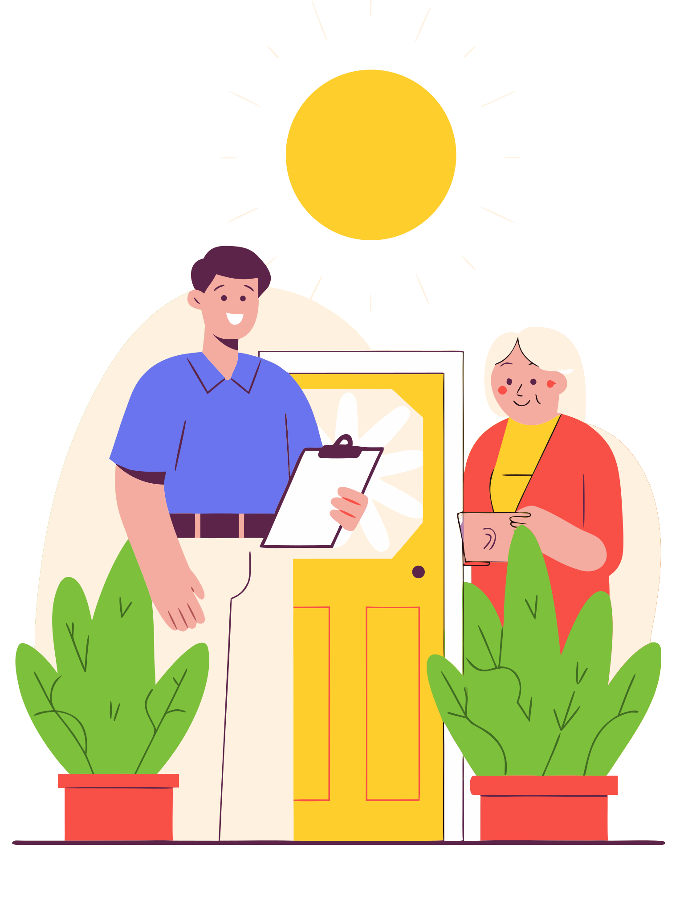
その場で決めず、まず電話を。
正直に、お伝えします
住んでいる家のことでも、離れた家のことでも。「何から話せばいいか」から、かまいません。
暮らしぶり、気になっていることを伺います。立ち会いが難しいときの進め方も、ご相談ください。
訪問の日、見るところ、お知らせの方法、ご家族への知らせ方を、ご相談のうえで決めます。金額は、先にお伝えします。
様子を見て、小さな用事を済ませます。気づいたことは、お伝えします。
作業の前に、金額をお伝えします。
受け取ったときの安心
書き方のイメージ（実際のお知らせではありません）
【家守】○月の見守りのお知らせ
「今月も、庭のアジサイがきれいに咲いていました。」そんな一通が届くだけで、遠くにいても、気持ちが少し軽くなる。そう考えています。
住み慣れた家で、暮らし続けたい。そのお手伝いです。月に一度、顔なじみが伺って、小さな用事を済ませます。
「いらない」と思われたら、そうおっしゃってください。ご本人の気持ちが、いちばん大切です。
ご実家や、住まなくなった家の様子を、写真つきでお知らせします。ご本人の了承のうえで、ご家族にも。
売るか、貸すか、決められないままでも大丈夫です。決めるのは、あとでかまいません。
料金について
まだ料金を決めていません。ご相談のうえ、決めます。出張費・最低料金は、お見積もりのときに、先にお伝えします。ご納得いただいてから、お決めいただきます。
このお仕事は、まだ始めていません。受け付け開始のお知らせを、お待ちください。
気になることは、ここで!?
まだ決めていません。月額の料金は、決まりしだいお知らせします。ご相談のうえ、決めます。
伺う人の名前と、訪問の日時・目的は、訪問の前にお知らせします。
まだ決めていません。鍵のお預かりなど、大切なことは、決まりしだい、先にお伝えします。いまは、お約束していません。
見つけた様子を、写真つきでお知らせします。専門の作業が必要なときは、その旨をお伝えし、進め方をご相談します。費用がかかるときは、先にお知らせします。
考えています。できる範囲は、決まりしだいお伝えします。いまはまだ、準備中です。
決まりしだい、先にお伝えします。ご納得いただいてから、お決めいただきます。
ご本人の気持ちが、いちばん大切です。ご家族だけで決めず、ご本人に会ってお話しすることから始めます。
逗子・葉山・鎌倉です。ご相談される方は、遠方にお住まいでもかまいません。
対応地域はどこまで!?
対象は、逗子市・鎌倉市・葉山町にある家です。ご相談される方は、遠方にお住まいでもかまいません。
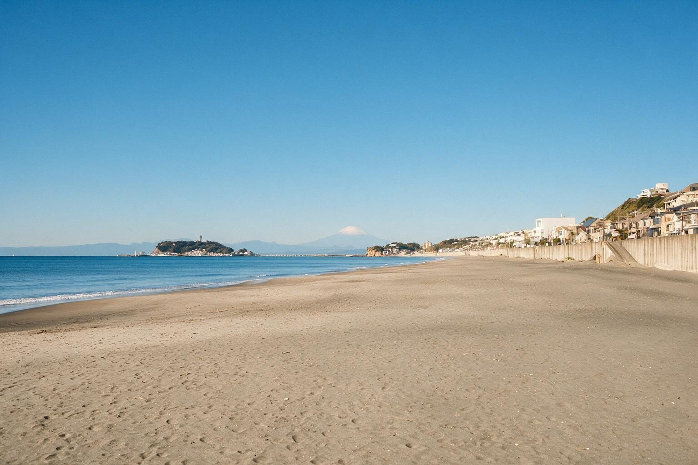
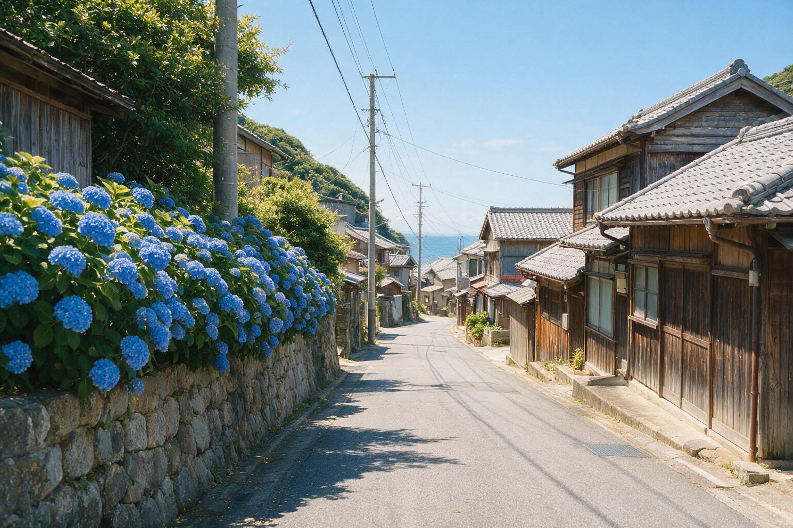
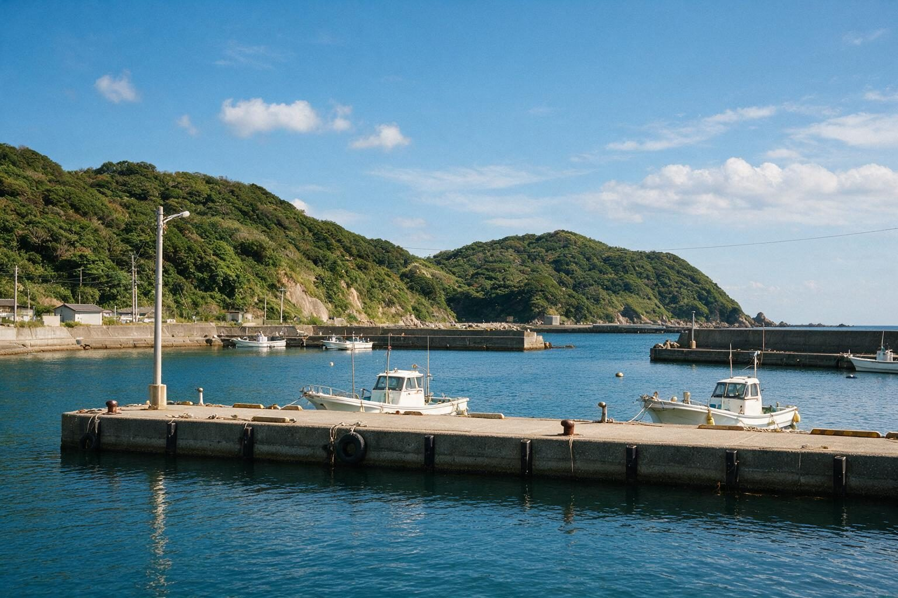
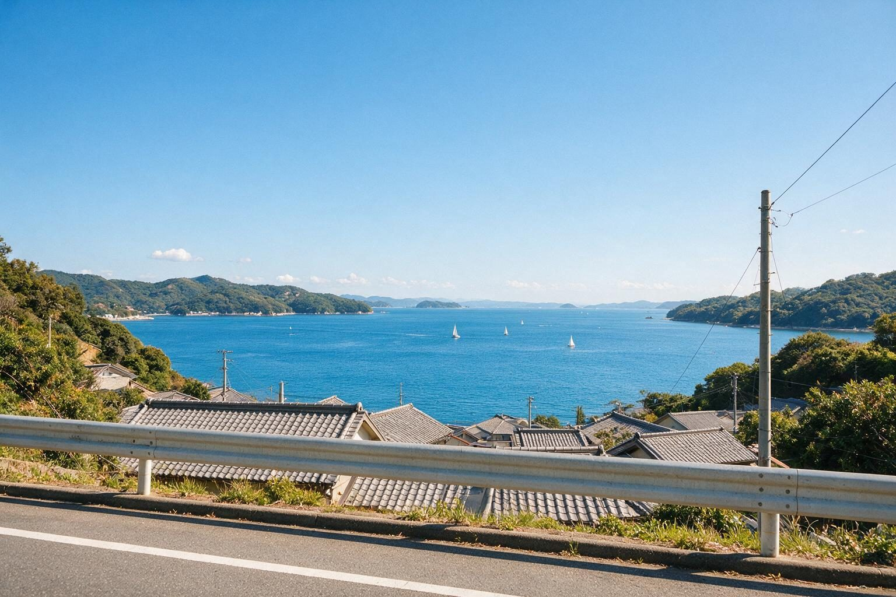
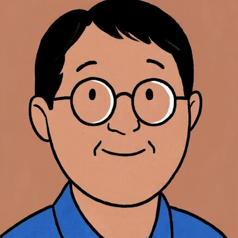
暮らしの困りごと編集室Local Edit代表 鈴木隆文
代表から、ひとこと
「家が空いたまま、売るのか貸すのか、まだ決められない」。決められないけれど、放っておくのも心配。そんな宙ぶらりんの時間を、少しでも穏やかに過ごしていただきたいと考えています。
逗子・鎌倉・葉山は、私たち自身が暮らしている街です。他人事ではない距離感で、丁寧に見させていただきます。
物件の状況を伺うだけでも、かまいません。お名前と町と、気がかりなことだけ、教えてください。
お電話でも、Webでも、ご相談いただけます。LINEでも、お気軽にどうぞ。お電話に出られないときは、折り返します。
暮らしの困りごと編集室Local Edit